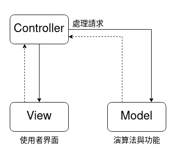
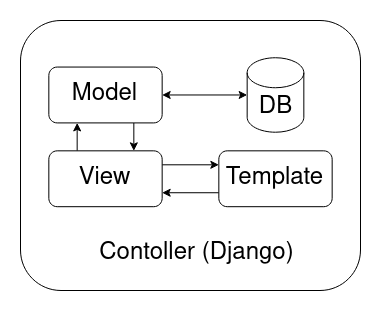

Intro
這兩天我東看看西看看接著就被問到一個問題，你會寫 Django 嗎？
這麼突如其來的發問，我只能說我沒有寫 Python 的習慣，但是我也好奇了難道 Django 有那麼難寫嗎？需要到跑來問我？
我就直接下手來開寫一個 Django based Web Application，殊不知這個旅途非常痛苦
而且不是一般的痛苦，是非常痛苦，顯然我太菜了。
Django
講到 Django 就是一個 Python 後端的開發框架，他採用了類 MVC 架構的模式進行開發，這個就叫做 MTV，u接著我會稍稍提到 MTV 架構究竟是什麼樣的概念。
注意：這邊都是採用 django-admin 生成的後端模板進行展示與說明
MVC 架構
簡單介紹 MVC 架構，主要 handle 請求的 Controller、提供使用者操作的圖形界面 View 以及 提供解決辦法的模型 Model，這三個部份簡單的構成了乾淨、穩定的執行環境，但多少也會存在一些缺陷，稍後會提到。
- 使用者透過 View 取得控制界面
- User → Controller → View (使用者透過 Controller 取得相對的 View)
- ← Controller ← View ← User (使用者透過 View 請求計算的內容)
- Contoller → Model (取得計算資訊)
- ← Model (回傳計算結果)

大致上是這樣，至於在 Node.js Express 又是如何的呢？
Node.js express
bin/www 是整個伺服器的核心，用於 handle 我們的 http(s) serverapp.js 其實就是 Controller，專門分配資源到其他的路徑( Path )routes/*.js 也是 Contoller 的一部分，但是這部份就是開始銜接 Model 的部份view/*.ejs 這邊採用 ejs 作為 View 的 template，最終結果會透過 ejs 渲染給使用者。
1 | MVC/ |
MTV 架構
MTV 架構最有趣的地方是他跟 MVC 很像，但是在 View 的部份被區分成 Template 以及 View 兩個部份，這兩部份最大的差異就是一個是專門處理使用者該看到什麼資料的 View (牽涉到 urls.py、service/、MTV備 pd1)，另一個則是專門渲染資料的 Template。沒聽懂嗎？沒關係，下面這張圖大概就是這麼運行的
備pd1: urls.py、service/、MTV/ 分別是在 Django 的實際範本（下面會提到）
- Contoller (Django) handle 所有東西的架構
- Model 提供一些演算法/功能
- Template 使用者界面的模板
- View 處理使用者請求的架構

Python Django
在 django 中資料結構又是如何呢？pd1
1 | MTV/ |
這裡的 Contoller 就不必多說了，主要討論 Model、Template 以及 View
MTV/、service/ 這兩個資料夾都包含 model、template、view
- models.py - Model，就是 model
- views.py - template (包含 TEMPLATE 的 UI) 本範例不包含 template 資料夾
- urls.py - View 導向使用看到的內容
這大概是整個 Django 的架構，之後會接著介紹 django-admin 以及 django 如何開發。
就等我寫完再說 ouo.